Operare con la leva (Futures)
Con il Buy/Long usi il margine (i fondi nel tuo account) per acquistare contratti a un prezzo molto vicino a quello dell'asset sottostante, con l'obiettivo di rivenderli più in alto. Esempio: acquisti un contratto da 1 BTC a 19.000 USD e lo vendi a 20.000 USD: la differenza di 1.000 USD è il profitto.
I Futures non sono come comprare e vendere criptovalute: sono più complessi e hanno un potenziale maggiore, ma le cose cambiano molto in fretta, in positivo e in negativo. Se sbagli, rischi di perdere il capitale.
Principi di gestione del rischio
- Non rischiare più del 2-3% del capitale totale su un singolo trade. Questo è il limite di perdita se scatta lo stop loss.
- Usa al massimo il 10% del saldo del wallet per singola posizione. È un limite diverso dal precedente: riguarda quanto capitale metti nella posizione, non quanto puoi perdere.
- Leggi e comprendi sempre i segnali di mercato prima di aprire una posizione.
- Isolated vs Cross: con Isolated puoi perdere al massimo l'importo della posizione; con Cross vengono usati automaticamente i fondi disponibili nel wallet per evitare la liquidazione, quindi il rischio è più alto.
- Stop Loss e Take Profit: lo Stop Loss chiude la posizione per limitare la perdita, il Take Profit la chiude al raggiungimento del profitto desiderato. Vanno impostati prima di entrare in posizione.
BingX
Exchange per operare in leva sui segnali futures, con copytrading.
Registrati su BingX ↗Registrandoti su BingX tramite questo link avrai accesso al Premium senza pagare nulla.
MEXC
Exchange con accesso al copytrading. Controlla sempre che l'indirizzo sia quello ufficiale.
Registrati su MEXC ↗Registrandoti su MEXC tramite questo link avrai accesso al Copy Trading senza pagare nulla.
Screenshot operativi di riferimento
Tocca uno screenshot per aprirlo a schermo intero e leggerlo bene.
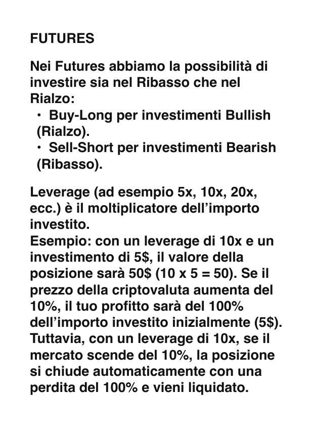
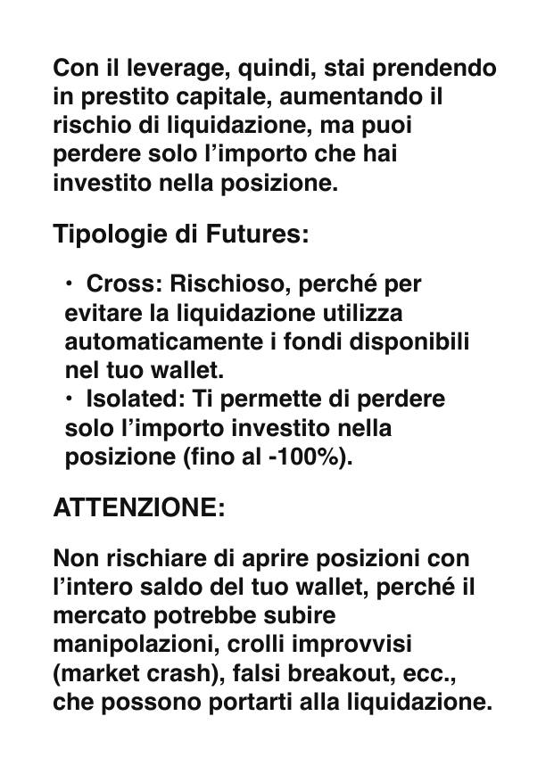
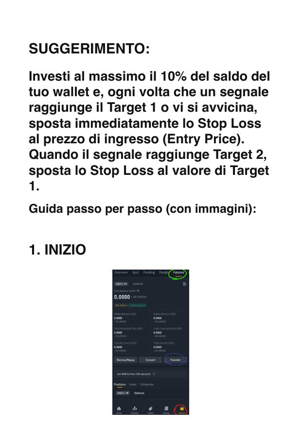
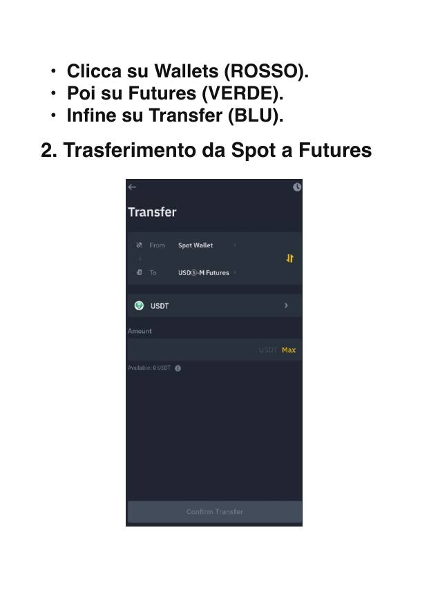
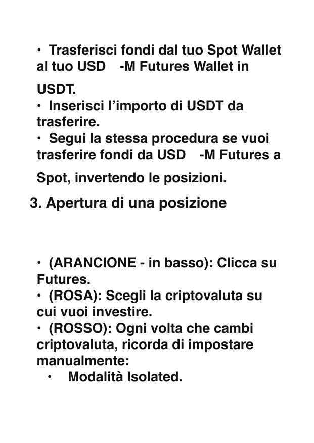
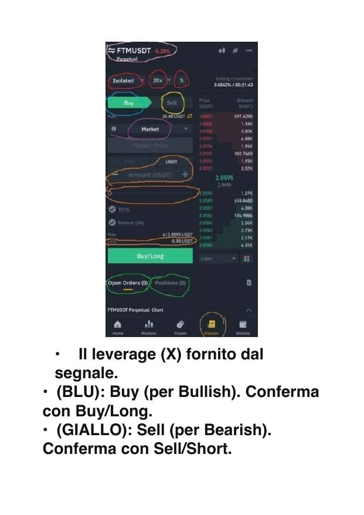
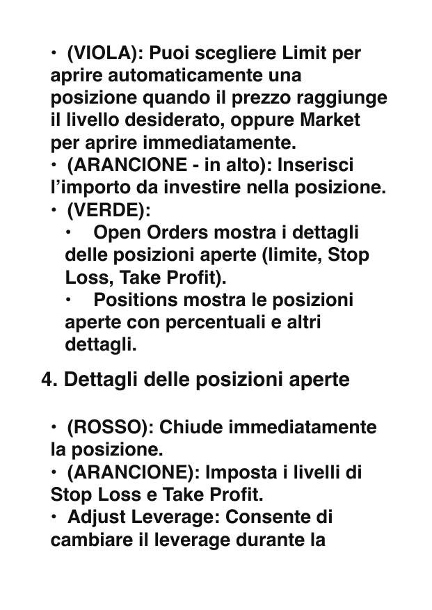
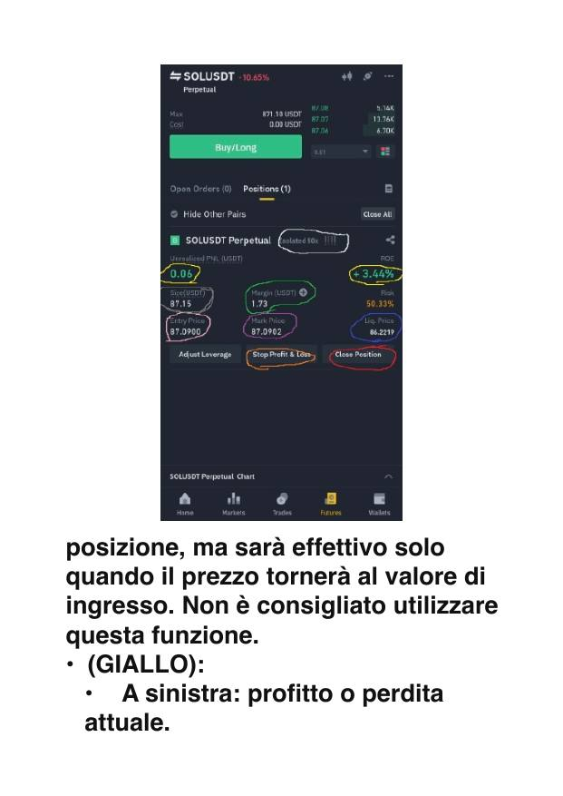
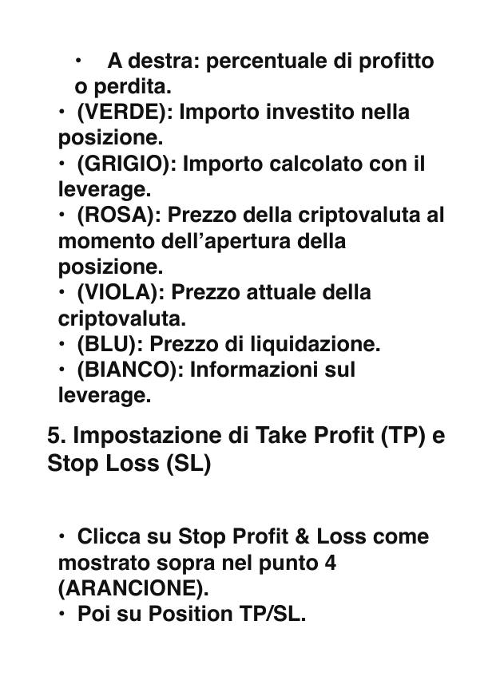
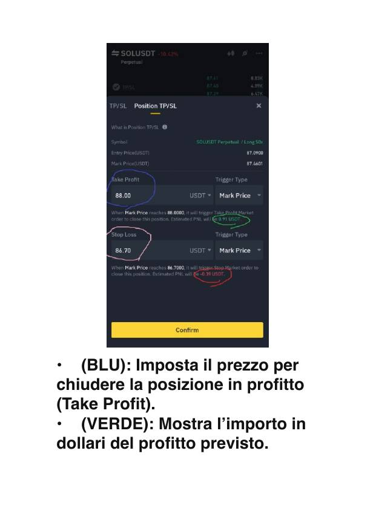
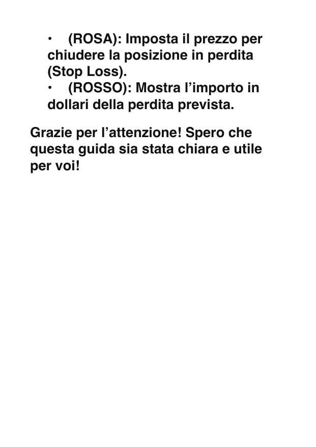
⚠️ Guida a scopo informativo: non è consulenza finanziaria. Il trading con leva comporta un rischio molto elevato, puoi perdere l'intero capitale investito.